TrainingOS · Navigation polish
29 October 2026. Account and Settings are the two primary sections, with 20px labels and larger hit targets. Export and account deletion live directly under Account. The shared Account header has no extra back link. Preview exit is distinct from real sign-out.
Logs has a secondary month heading and muted year. Calendar and list links open the normal training overview with the matching plan, day and week selected. A date with one recorded session is clickable across its entire cell; multiple sessions retain individual links. Recorded sets remain accessible through Training ansehen. Reload, browser Back and day/week changes preserve the URL selection. All six sample dates were checked, along with the list view and mobile date hit targets. Home cards wrap at a shared 352px minimum, clamped to the available mobile width. The Plan prefix and strength/hypertrophy preview names have been removed.
Verified at 320, 390, 1024, 1440 and 1600px: no horizontal overflow. Browser checks covered real sign-in/sign-out, protected-route rejection after logout, preview exit, export download, deletion confirmation/cancellation, and desktop/mobile date clicks. Screenshots use isolated sample data, except the blank login captured after signing out of a temporary local test account. 50 frontend tests and 85 backend tests passed; four PostgreSQL-only tests were skipped.
Verification results · Live Home · Live Account · Live Logs
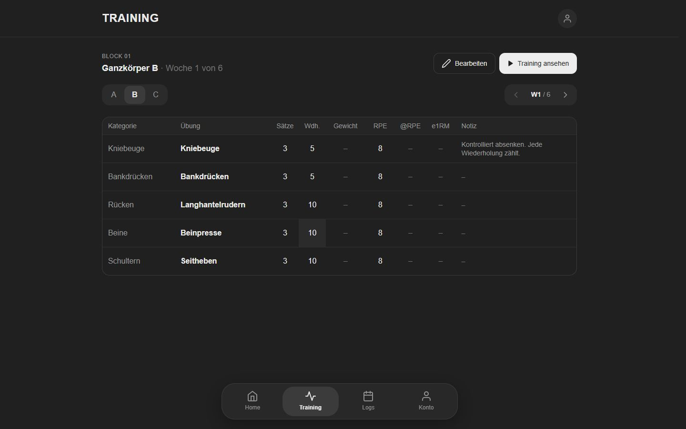
Calendar destination · Desktop
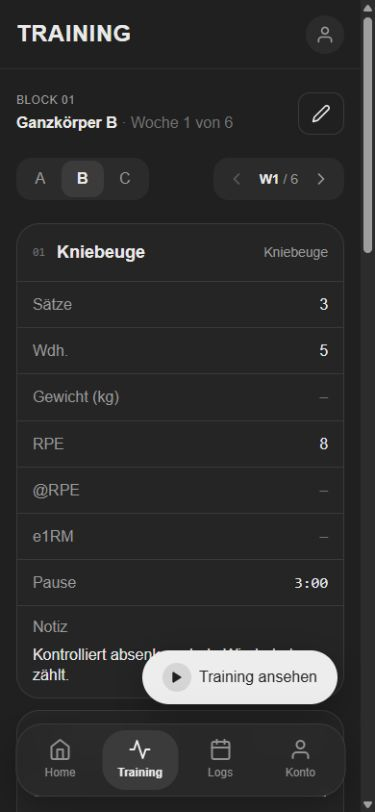
Calendar destination · Mobile
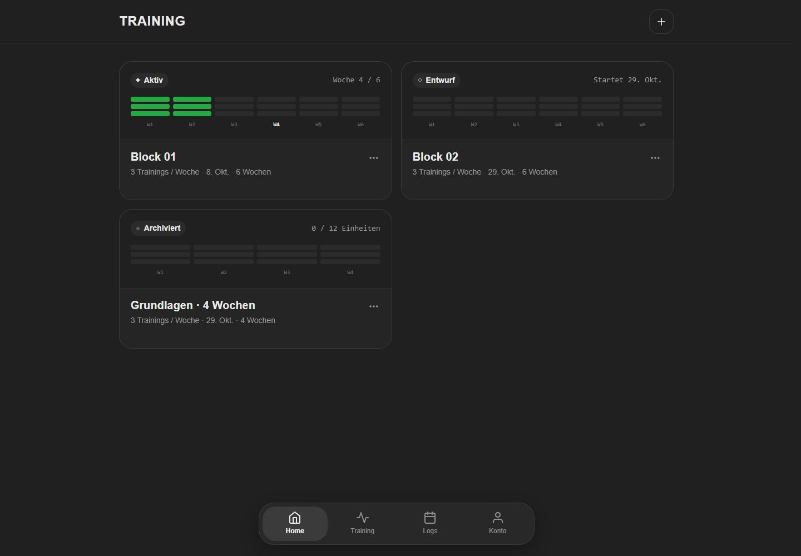
Home · Desktop
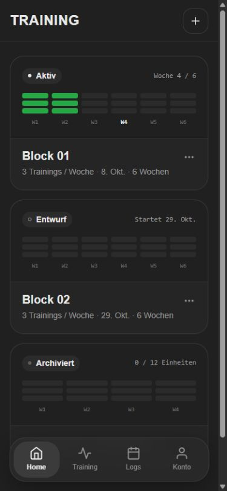
Home · Mobile
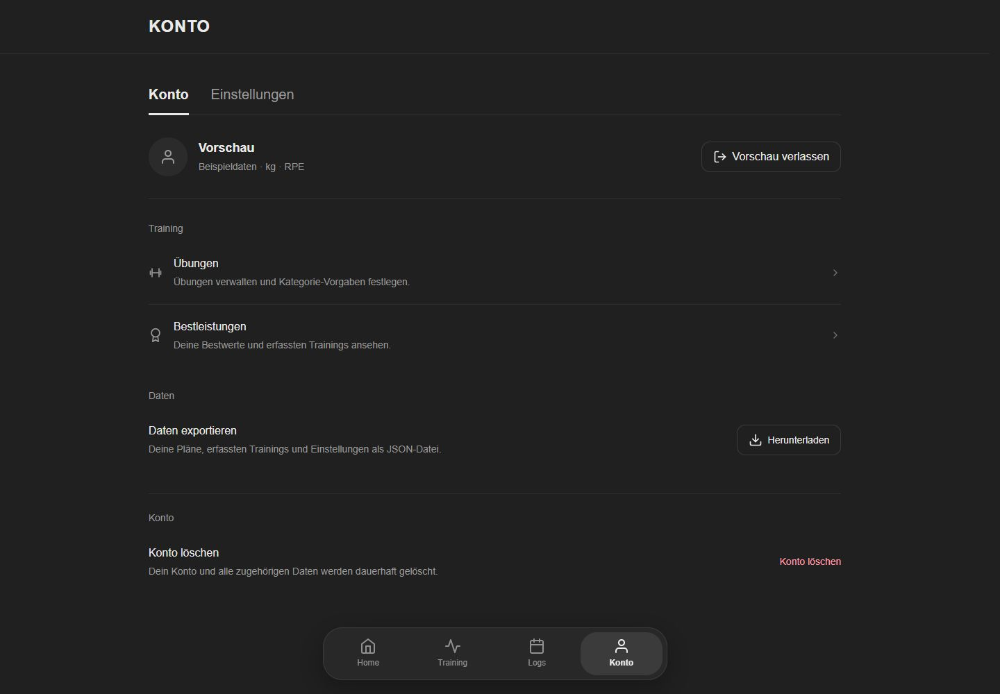
Account · Desktop
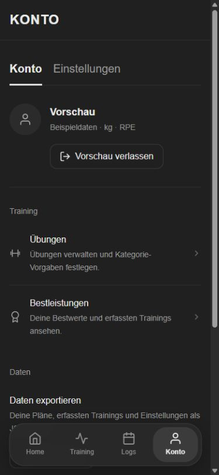
Account · Mobile
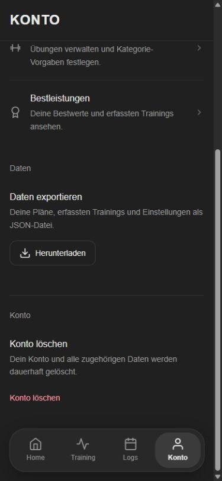
Account data · Mobile
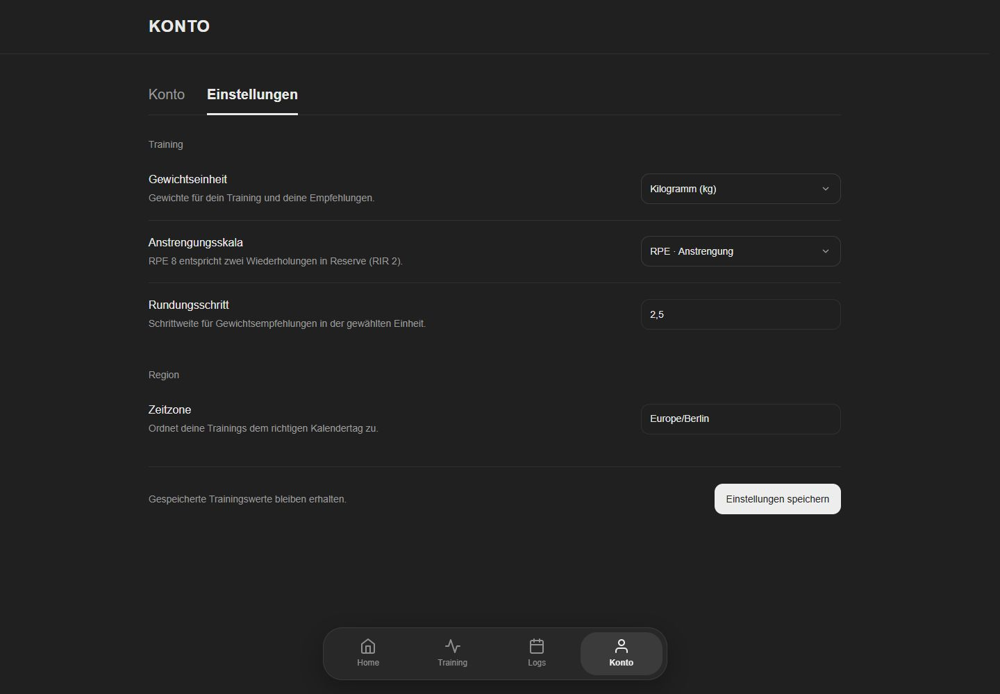
Settings · Desktop
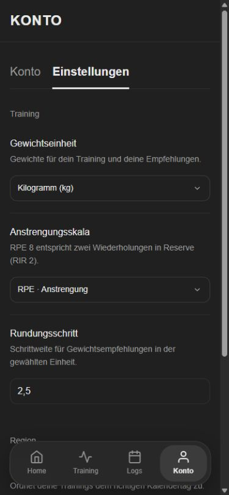
Settings · Mobile
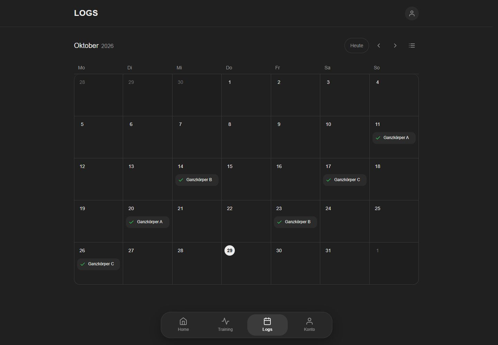
Logs · Desktop
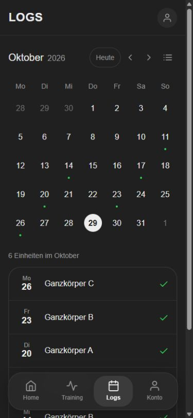
Logs · Mobile
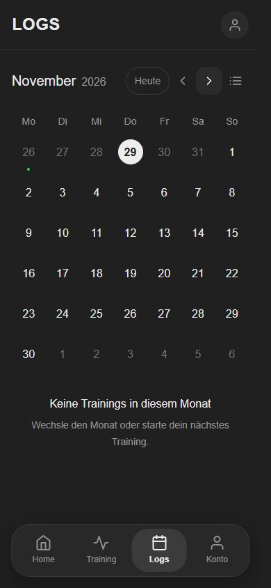
Empty month · Mobile
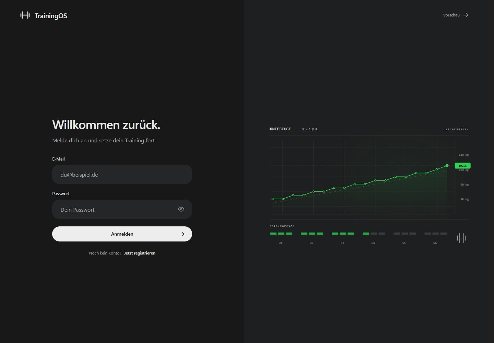
Real logout · Login